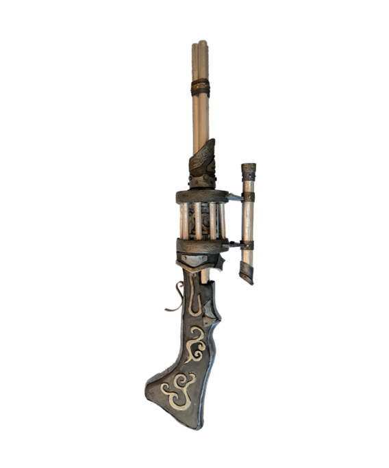
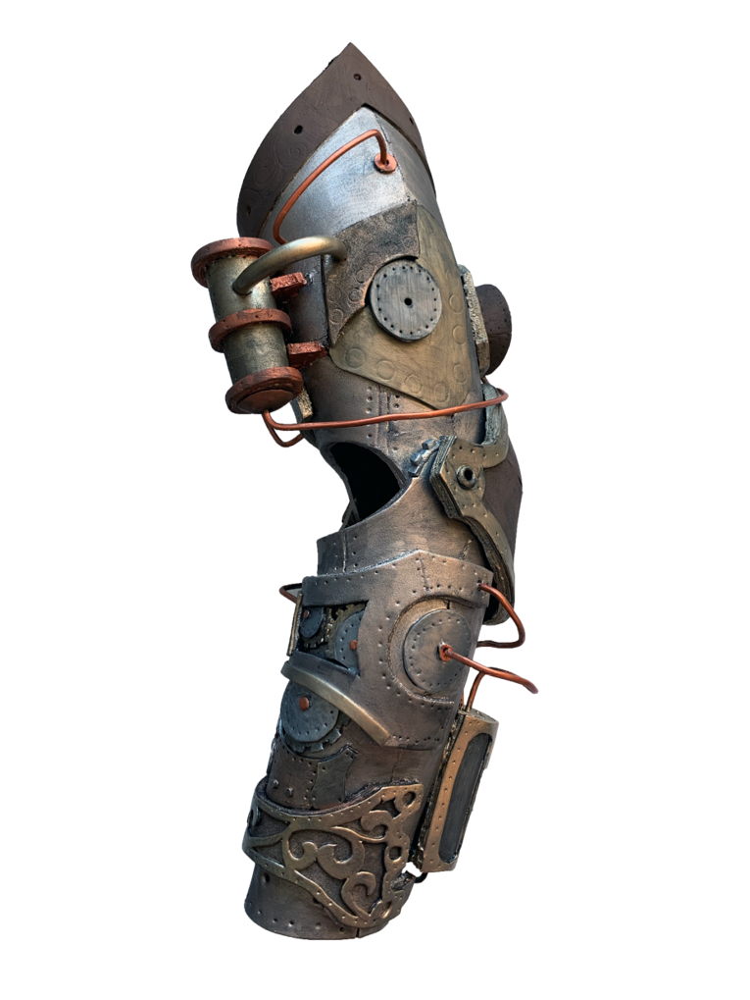

Steampunk
- Sniper Shotgun & Mech Arm
For this project, I have made two steampunk costume pieces. The mech arm gear and the sniper shotgun. The idea comes from a skin concept art of Murdock from the game Paragon.
One of the reason why I want to go for a steampunk style costume is that we believe steampunk is an art of detail. It is a style that people will find the beauty within the details of creation.

